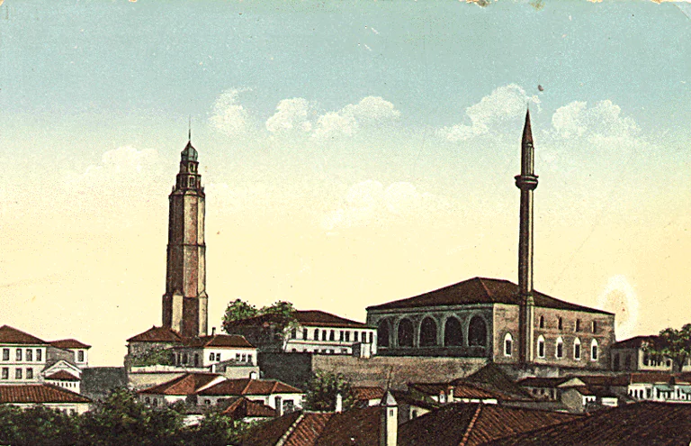

Opis
Burmali džamija, snimljena oko sredine 19. stoljeća. Jedina džamija na desnoj obali Vardara. Nalazila se odmah uz Kameni most. Ime je dobila po spiralnom (burmali) trupu svojega minareta. Podignuta je krajem 15. stoljeća, a srušena 1925. godine, kako bi se na njezinu mjestu izgradio Časnički dom.

Burmali džamija i nekoliko zgrada izgrađenih oko nje. Neoblikovana ulica. Okupljalište prijevoznika robe za trgovinu, s volovskim zapregama. - kraj 19. stoljeća

Burmali džamija - 1912. - 1918. godina. Južni prilaz Kamenom mostu s gusto nanizanim trgovačko-obrtničkim dućanima.

Burmali džamija s dijelom Kamenog mosta i šetalištem uz nju. Lijevo od nje vide se zgrade izgrađene pred samim ulazom na Kameni most, u kojima su bili dućani i obrtnici. - 1910-ih.

Burmali džamija - početak 1920-ih. Ispred mosta uočavaju se prvi kiosci za usputne usluge i prodaju. Kiosci imaju naglašenu arhitekturu u detaljima, tj. u oblikovanju krovova.

Burmali džamija - 1920. godina.

Hatundžuk džamija s turbetom. U pozadini se vidi minaret Jahja-pašine džamije. Hatundžuk džamija potječe iz 1511. godine. Graditeljica ove džamije je Hani Hatun, jedna od kćeri Jahja-paše. Ime džamije, Hatundžuk, u prijevodu znači mala gospođa (dama) ili gospođica. - kraj 19. stoljeća.

Hadži Balaban džamija. Nalazi se na prostoru između Kuršumli-hana i Dukandžik džamije. Podignuta je u 15. stoljeću. (kraj 19. stoljeća)

Begova kula (ili feudalna kula). Ova je kula pripadala nekom begu. Nalazi se ispred glavnog ulaza u današnji Dom Armije R. Makedonije. Razdoblje njezine izgradnje nije poznato, ali se pretpostavlja da je podignuta krajem 17. ili početkom 18. stoljeća. Fotografija je iz 19. stoljeća.

Begova kula krajem 19. stoljeća.

Begova kula početkom 20. stoljeća.

Begova kula, 1910-ih.

Stara Kazandžiler džamija, u neposrednoj blizini Kuršumli-hana. Podignuta u 15. stoljeću, poznata kao džamija kotlara. (danas ne postoji)

Dukandžik džamija, izgrađena sredinom 16. stoljeća.

Kuršumli-han, izgrađen sredinom 16. stoljeća. Monumentalna je građevina islamske profane arhitekture. Nalazi se u staroj skopskoj čaršiji, odmah uz današnji Muzej Makedonije.

Sahat-kula i džamija sultana Murata - 1920-ih. Sahat-kula podignuta je sredinom 16. stoljeća (1566. - 1572.), kao prva sahat-kula u Osmanskoj državi. Satni mehanizam i majstor koji se trebao brinuti za njega dovedeni su iz Sigeta u Ugarskoj, nakon što su Turci zauzeli grad Siget. Džamija sultana Murata: sultan Murat II., otac sultana Mehmeda Osvajača, podigao je ovu džamiju 1436. godine kao svoju zadužbinu.

Džamija sultana Murata 1910-ih.

Sahat-kula i džamija sultana Murata - 1920-ih.

Sahat-kula i džamija sultana Murata - 1920-ih.

Sahat-kula i džamija sultana Murata - 1920-ih.


Sahat-kula i džamija sultana Murata - 1920-ih.

Gazi Isa-begova džamija - 1920-ih. Podigao ju je Isa-beg, sin Ishak-bega, nakon očeve smrti kao zadužbinu. (15. stoljeće)

Gazi Isa-begova džamija - 1920-ih. Podigao ju je Isa-beg, sin Ishak-bega, nakon očeve smrti kao zadužbinu. (15. stoljeće)

Gazi Isa-begova džamija - 1920-ih. Podigao ju je Isa-beg, sin Ishak-bega, nakon očeve smrti kao zadužbinu. (15. stoljeće)

Gazi Isa-begova džamija - 1920-ih.

Tursko groblje, a u pozadini Gazi Isa-begova džamija - 1920-ih.

Gazi Isa-begova džamija - dvorište - 1920-ih.

Gazi Isa-begova džamija - dvorište - 1920-ih.

Mustafa-pašina džamija - 1920-ih. Podignuta je 1492. godine, dao ju je sagraditi tadašnji zapovjednik Mustafa-paša.

Mustafa-pašina džamija - 1920-ih. Podignuta je 1492. godine, dao ju je sagraditi tadašnji zapovjednik Mustafa-paša.

Mustafa-pašina džamija - 1920-ih.

Mustafa-pašina džamija u pozadini, a ispod nje djelomično se vidi Paša Jigit-begova džamija, koja je bila najstarija džamija u Skoplju. (danas ne postoji) - 1920-ih.

Ulica u starom dijelu grada, a u pozadini Ishak-begova ili Aladža džamija. Ovu je džamiju podigao zapovjednik Skoplja Ishak-beg (sin Paše Jigit-bega, osvajača Skoplja) u prvoj polovini 15. stoljeća, 1438. godine. Uz džamiju je kao svoju zadužbinu podigao i turbe, medresu, konake i zgrade koje pripadaju islamskoj profanoj arhitekturi. Godine 1519. Mehmed, unuk Ishak-bega, preuredio je džamiju i dodao dva bočna broda - 1920-ih.
Orijentacija

Na staroj orijentacijskoj karti
Foto-album
Tema
 Akvadukt4 razglednice
Akvadukt4 razglednice Kale30 razglednica
Kale30 razglednica Mostovi60 razglednica
Mostovi60 razglednica Kej58 razglednica
Kej58 razglednica Trg46 razglednica
Trg46 razglednica Građevine66 razglednica
Građevine66 razglednica Kršćanski hramovi19 razglednica
Kršćanski hramovi19 razglednica Muslimanske građevine33 razglednice
Muslimanske građevine33 razglednice Časnički dom29 razglednica
Časnički dom29 razglednica Kazalište28 razglednica
Kazalište28 razglednica Željeznički kolodvor13 razglednica
Željeznički kolodvor13 razglednica Škole36 razglednica
Škole36 razglednica Parkovi12 razglednica
Parkovi12 razglednica Tržnice18 razglednica
Tržnice18 razglednica Ulice38 razglednica
Ulice38 razglednica Panorama I60 razglednica
Panorama I60 razglednica Panorama II30 razglednica
Panorama II30 razglednica Kolaži55 razglednica
Kolaži55 razglednica Poplave9 razglednica
Poplave9 razglednica Potres27 razglednica
Potres27 razglednica Skoplje 2000.26 razglednica
Skoplje 2000.26 razglednica